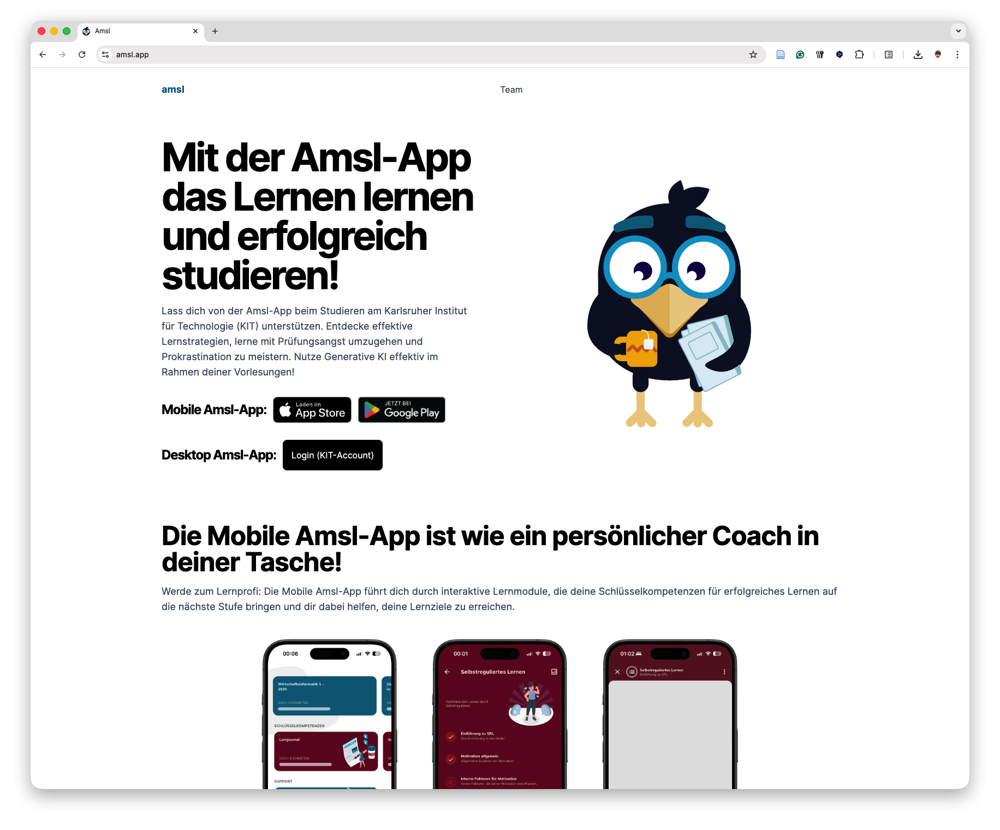
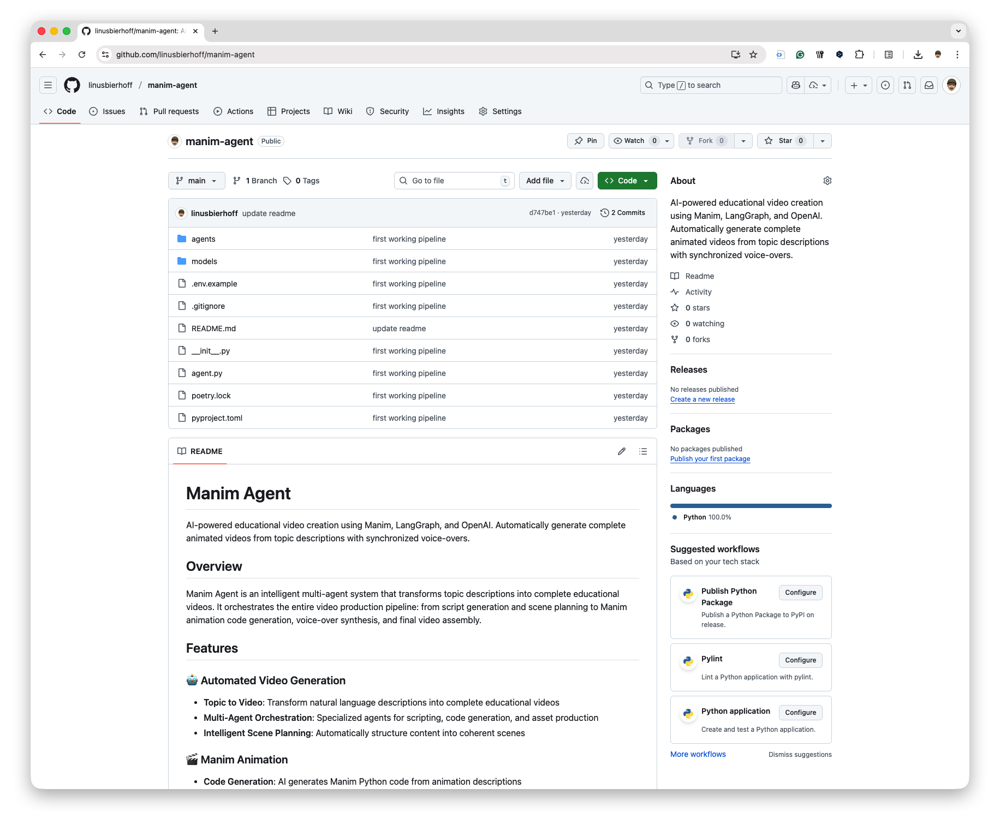
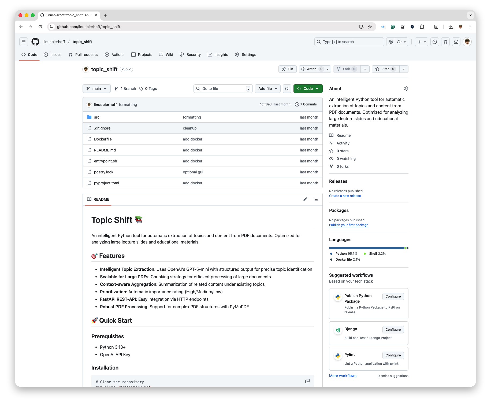

Projects Here are some of my projects I've worked on recently. Click on any image to learn more about the project.  AMSL-App A mobile learning companion for university students.  Manim-Agent An agentic pipeline for learning video production.  Topic-Shift An agentic pipeline to extract topics and contents from learning materials.